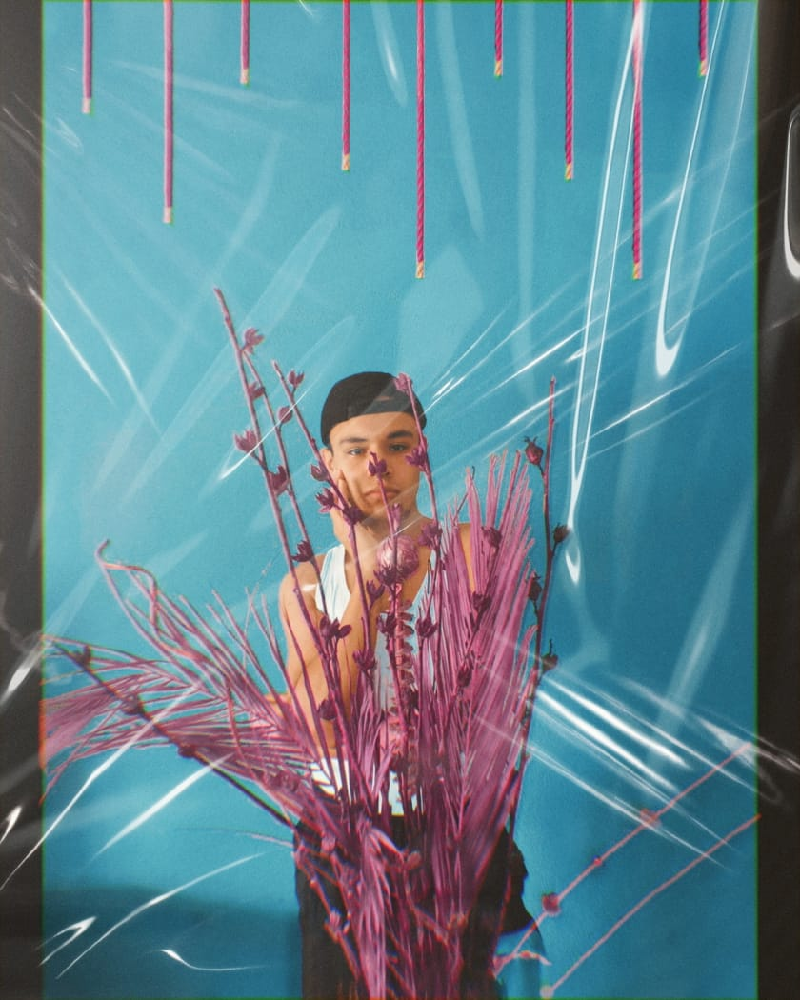
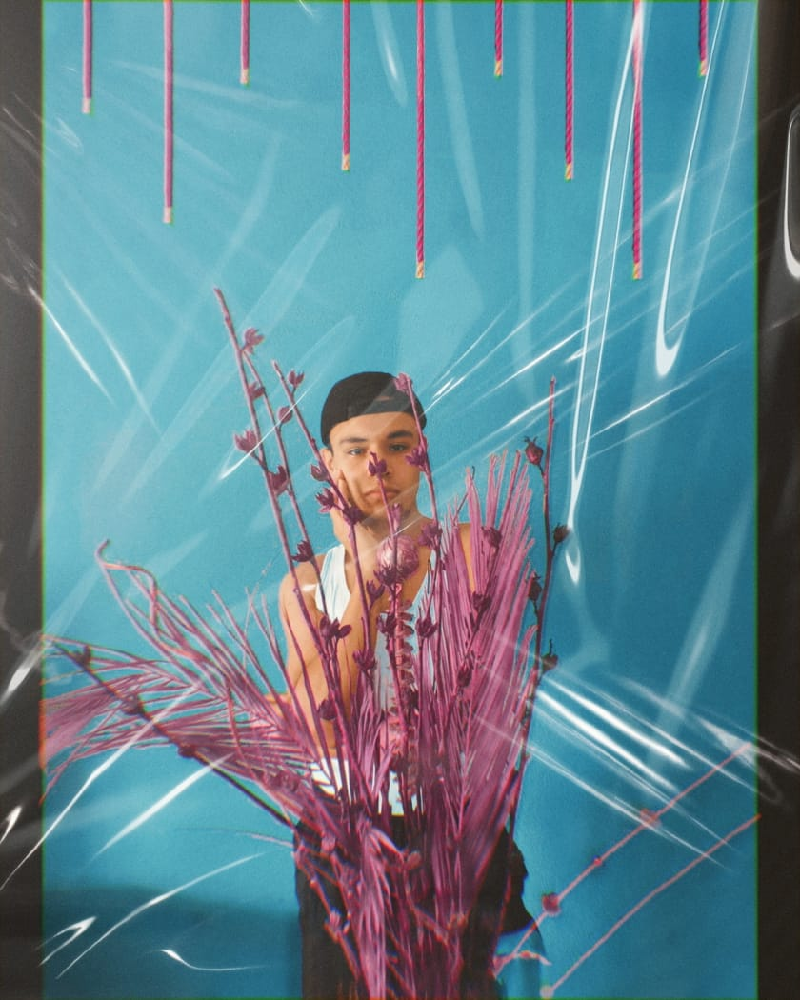

Uno de mis pasatiempos favoritos es escuchar musica
aqui dejo una de mis playlist favoritas
≧◠‿◠≦✌
Otra de las cosas que me encanta hacer en mi tiempo libre es ver ANIME aqui puede ver un fragmento de un anime que me encanta
❁◕ ‿ ◕❁
y por ultimo sin duda una actividad que realizo con mucho entusiasmo es la fotografia y aunque no hago nada profesional trato de siempre dar lo mejor
(>‿◠)✌
 
